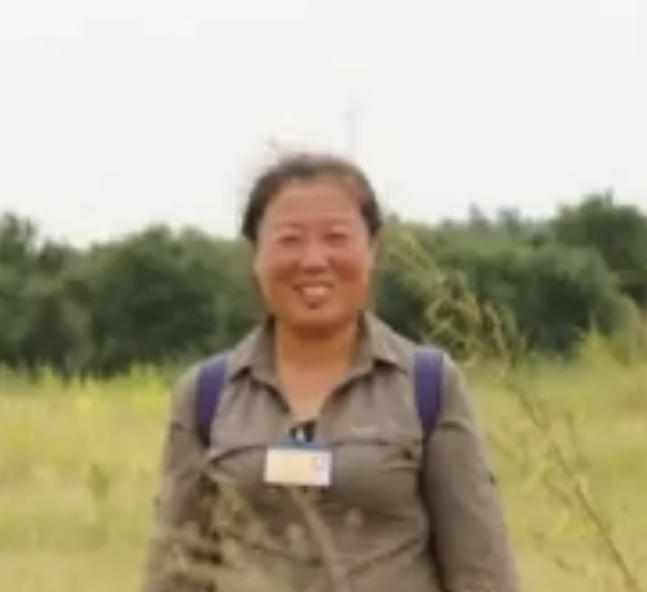
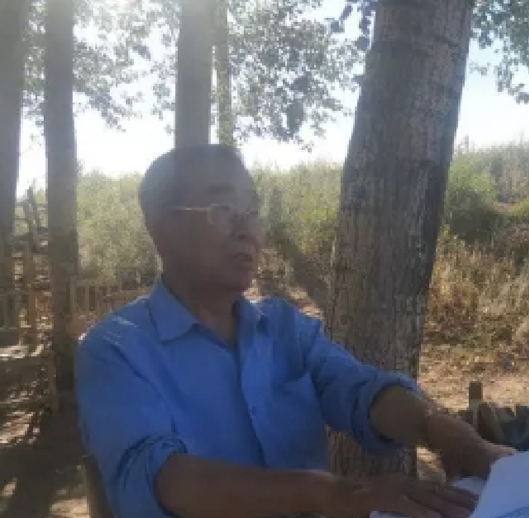

我们的团队

万平
理事会负责人

万晓白
理事会秘书长

李庆禄
监事会负责人
理事会执行会长：董洪波， 财务农业负责人：李彦伦， 出纳联络负责人：王春玲， 活动对接负责人：施彦秋
全息认知，知行合一，带引下一代和更多人进入、建设生态可持续的光明新世界
以草治沙，草生沙固，以禽养农，耐心演进，围而绿之，三年见成
农民增收，食品安全，社会发展，组织发展，国家增绿，全球减排
万平徒步踏查2500平方公里的科尔沁后，筹借30万元资金，承包了1500亩荒地，将“科尔沁沙地生态示范区”的牌子插在了通榆县新发乡新合屯的沙坨子上。
2001年1月，栽种了5000棵杨树和30000棵沙棘。然而，植被类型分布有其客观规律，科尔沁沙地年降雨量偏低，盛夏炙烤，加上营养不良，有些树木根本熬不过冬天。2001年冬天，万平在沙地上撒下了草种，注重原生植被的保护。
2002年，示范区打了多眼浅水井，种了2万棵杨树和大量灌木，又在沙地上撒了很多草种，浇上水后盖上碎草、干柴，利用当地草本植物种群逐渐恢复植被。这就是后来被业内认可的“盖被子育草法”。
2004年，万平所做的这项工作在中国民盟东北三省环境保护论坛上，引起时任吉林省副省长陈晓光等领导的高度重视。2007年4月，陈晓光副省长联系协调相关部门给万平立项拨款23万人民币。2008年10月，万平在世界银行与国务院扶贫办、民政部共同举办的大会上，得到了联想集团17万元的资金支持。
示范区已成为哈尔滨工业大学、中国农业大学、中国政法大学、北京林业大学、北京师范大学、复旦大学等100多所高校的生态环境教育实践基地。仅科尔沁沙地示范区，就聚集了4000多名中国在校大学生志愿者、6000多名全国的各界群众和各国留学生。
理事会负责人
理事会秘书长
监事会负责人
理事会执行会长：董洪波， 财务农业负责人：李彦伦， 出纳联络负责人：王春玲， 活动对接负责人：施彦秋